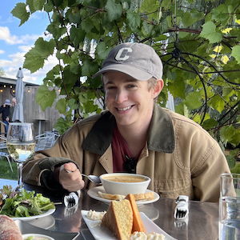
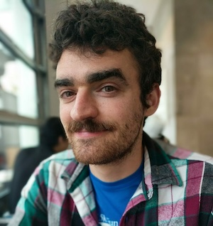
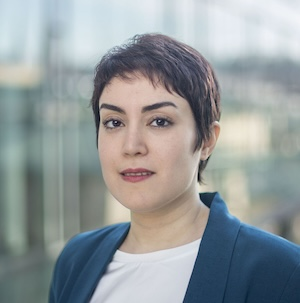

Generative AI + Law (GenLaw) ’24
We are very excited to announce the second Workshop on Generative AI and Law (GenLaw ’24)! Please join us in Vienna, Austria at ICML ’24, where we’ll be bringing together experts in privacy, ML, policy, and law to discuss the intellectual property (IP) and privacy challenges that generative AI raises with a special focus on UK and EU issues.
Read our report from last year, an explainer on training dataset curation, and a piece on the copyright issues generative AI raises.
|
Workshop date: |
|
|
Paper submission deadline (CFP): |
|
About GenLaw
Progress in generative AI depends not only on better model architectures, but on terabytes of scraped Flickr images, Wikipedia pages, Stack Overflow answers, and websites. But generative models ingest vast quantities of intellectual property (IP), which they can memorize and regurgitate verbatim. Several recently-filed lawsuits relate such memorization to copyright infringement. These lawsuits will lead to policies and legal rulings that define our ability, as ML researchers and practitioners, to acquire training data, and our responsibilities towards data owners and curators.
AI researchers will increasingly operate in a legal environment that is keenly interested in their work — an environment that may require future research into model architectures that conform to legal requirements. Understanding the law and contributing to its development will enable us to create safer, better, and practically useful models.
Our Workshop
We’re excited to share a series of tutorials from renowned experts in both ML and law and panel discussions, where researchers in both disciplines can engage in semi-moderated conversation.
Our workshop will begin to build a comprehensive and precise synthesis of the legal issues at play. Beyond IP, the workshop will also address privacy and liability for dangerous, discriminatory, or misleading and manipulative outputs. It will take place on 27 July 2024.
Schedule
To Come!
Organizer Information

Katherine Lee
Ph.D. Candidate Cornell University Department of Computer Science
kate.lee168@gmail.comKatherine’s work has provided essential empirical evidence and measurement for grounding discussions around concerns that language models, like CoPilot, are infringing copyright, and about how language models can respect an individuals’ right to privacy and control of their data. Additionally, she has proposed methods of reducing memorization. Her work has received recognition at ACL and USENIX.

A. Feder Cooper
Postdoctoral Researcher Microsoft Research Affiliate Researcher Stanford HAI Incoming Assistant Professor of Computer Science Yale University
afc78@cornell.eduCooper studies how to make more reliable conclusions when using ML methods in practice. This work has thus-far focused on empirically motivated, theoretically grounded problems in Bayesian inference, model selection, and deep learning. Cooper has published numerous papers at top ML conferences, interdisciplinary computing venues, and tech law journals. Much of this work has been recognized with spotlight and contributed talk awards. Cooper has also been recognized as a Rising Star in EECS (MIT, 2021).
Niloofar Mireshghallah
Post-Doctoral Researcher University of Washington, Paul G. Allen Center for Computer Science and Engineering
niloofar@cs.washington.eduNiloofar’s research aims at understanding learning and memorization patterns in large language models, probing these models for safety issues (such as bias), and providing tools to limit their leakage of private information. She is a recipient of the National Center for Women & IT (NCWIT) Collegiate award in 2020 for her work on privacy-preserving inference, a finalist for the Qualcomm Innovation Fellowship in 2021, and a recipient of the 2022 Rising Star in Adversarial ML award. She was a co-chair of the NAACL 2022 conference and has been a co-organizer for numerous successful workshops, including Distributed and Private ML (DpmL) at ICLR 2021, Federated Learning for NLP (FL4NLP) at ACL 2022, Private NLP at NAACL 2022 and Widening NLP at EMNLP 2021 and 2022
Lydia Belkadi
Doctoral Researcher in Privacy Preserving Biometrics KU Leuven Center for IT & IP LawScience
lydia.belkadi@kuleuven.be
James Grimmelmann
Professor of Digital and Information Law Cornell Law School and Cornell Tech
james.grimmelmann@cornell.eduJames Grimmelmann is the Tessler Family Professor of Digital and Information Law at Cornell Tech and Cornell Law School. He studies how laws regulating software affect freedom, wealth, and power. He helps lawyers and technologists understand each other, applying ideas from computer science to problems in law and vice versa. He is the author of the casebook Internet Law: Cases and Problems and of over fifty scholarly articles and essays on digital copyright, content moderation, search engine regulation, online governance, privacy on social networks, and other topics in computer and Internet law. He organized the D is for Digitize conference in 2009 on the copyright litigation over the Google Book Search project, the In re Books conference in 2012 on the legal and cultural future of books in the digital age, and the Speed conference in 2018 on the implications of radical technology-induced acceleration for law, society, and policy.
Matthew Jagielski
Research Scientist Google DeepMind
jagielski@google.com
Milad Nasr
Research Scientist Google DeepMind
milad@srxzr.com
Advisors
Pamela Samuelson
Distinguished Professor of Law and Information University of California, Berkeley

Colin Raffel
Associate Professor and Associate Research Director University of Toronto and Vector Institute
Colin Raffel is an Associate Professor at the University of Toronto and an Associate Research Director at the Vector Institute. His research in machine learning centers on decentralized collabora- tive development of models, efficient training recipes, and addressing risks associated with large-scale models.
Andres Guadamuz
Reader in Intellectual Property Law University of Sussex Editor in Chief Journal of World Intellectual Property
Andres Guadamuz is a Reader in Intellectual Property Law at the University of Sussex and the Editor in Chief of the Journal of World Intellectual Property. His main research areas are on artificial intelligence and copyright, open licensing, cryptocurrencies, and smart contracts. He has written two books and over 40 articles and book chapters, and also blogs regularly about different technology regulation topics.
Brittany Smith
UK Policy and Partnerships Lead OpenAI
Brittany Smith is the UK Policy and Partnerships Lead at OpenAI. Brittany has held roles working at the intersection of AI and equity in industry, civil society, and philanthropy. She is a member of the Board of Directors of Partnership on AI, and graduated from Northwestern University and the London School of Economics.
Herbie Bradley
Research Scientist UK AI Safety Institute
Herbie Bradley is a Research Scientist in the UK AI Safety Institute, working on research to support AI governance and evaluations for advanced AI systems. Herbie is also a PhD student at the University of Cambridge, and prior to joining the UK’s Frontier AI Taskforce spent the past few years studying the behaviour of large language models and their implications for AI governance in collaboration with several AI start-ups and non-profit research groups, including EleutherAI.

Hoda Heidari
K&L Gates Career Development Assistant Professor in Ethics and Computational Technologies Carnegie Mellon University
Hoda Heidari is the K&L Gates Career Development Assistant Professor in Ethics and Computational Technologies at Carnegie Mellon University, with joint appointments in the Machine Learning Department and the Institute for Software, Systems, and Society. She is also affiliated with the Heinz College of Information Systems and Public Policy at CMU, and co-leads the university-wide Responsible AI Initiative. Her work is supported by the NSF Program on Fairness in AI in Collabo- ration with Amazon, PwC, CyLab, Meta, and J. P. Morgan, and she is senior personnel at AI-SDM: the NSF AI Institute for Societal Decision Making.
Michèle Finck
Professor of Law and Artificial Intelligence University of Tübingen Co-director CSZ Institute for Artificial Intelligence and Law
Michèle Finck is Professor of Law and Artificial Intelligence at the University of Tübingen. Michèle co-directs the CSZ Institute for Artificial Intelligence and Law, and is a member of the Cluster of Excellence ‘Machine Learning: New Perspectives for Science’ and serves on its steering committee. Her research focuses on the regulation of artificial intelligence as well as on EU data law. She is a member of a number of expert committees on digitalization, including the Council of Europe’s Committee on Artificial Intelligence.
Contact us
Reach the organizers at: genlaw.org@gmail.com
Or, join our mailing list at: genlaw@groups.google.com